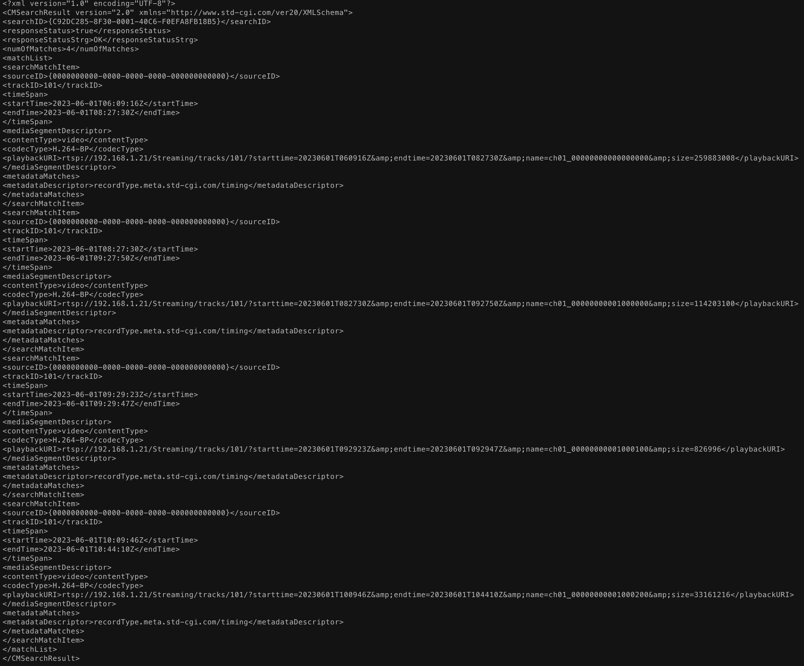

Setting IP cameras
Do it for each camera Don't Forget to save after each step!!!
Step 1: Set Time
- Get into camera ip config, system<system settings<time settings
- Set time and NTP server(first sync with PC then test NTP)
Step 2: Set video streams
- Go to Video/Audio tab<Video
- Now set main stream(normal) for 1920x1080 and 25fps h264 then save
- Now set substream 640x480 25fps MJPEG instead of h264
- SAVE!!!
Step 3: Test those streams
- Check mjpeg using
http://<username:password>@<ip-address>/ISAPI/Streaming/channels/102/httppreview
- Check rtsp stream using
mpv rtsp://<username:password>@<ip-address>
Step 4: Format SD card and setup recording
- Go to storage tab<storage management
- Set Percentage of Record to 100
- Tick the local SD card, select format and wait until it formats
- SAVE!!!
Step 5: Setup storage
- Go to Schedule Settings in Storage tab
- Tick enable
- drag monday until fully selected, copy that to all
- Select Advanced options
- Choose Stream Type as Main Stream(Normal), recording expiration to 2days(32GB SDcard) then click OK
- SAVE!!!
Step 6: Fetch recorded list
Enter below lines to terminal for checking whether camera recording or not
curl -u <username:password> --digest "http://<ip-address>/ISAPI/ContentMgmt/search" -H "Content-Type: application/xml" -X GET -d '<?xml version: "1.0" encoding="utf-8"?>
<CMSearchDescription> <searchID>C92DC285-8F30-0001-40C6-F0EFA8FB18B5</searchID><timeSpanList>
<timeSpan> <startTime>2020-04-07T00:00:00Z</startTime> <endTime>2036-04-07T23:59:59Z</endTime> </timeSpan>
</timeSpanList> <maxResults>100</maxResults> <searchResultPostion>0</searchResultPostion> <metadataList>
<metadataDescriptor>//recordType.meta.std-cgi.com</metadataDescriptor> </metadataList>
</CMSearchDescription>' -v -o response.txt
cat response.txt to check if recording or not 